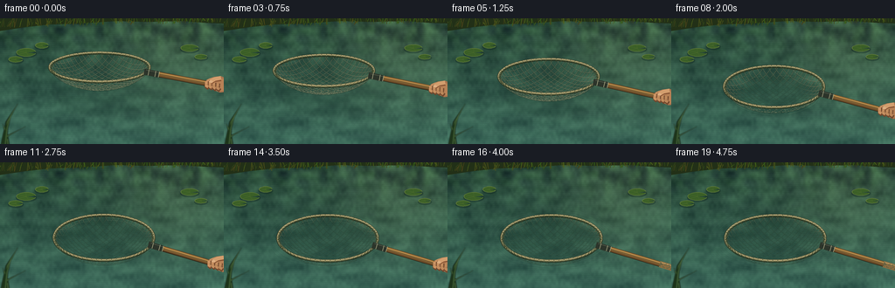
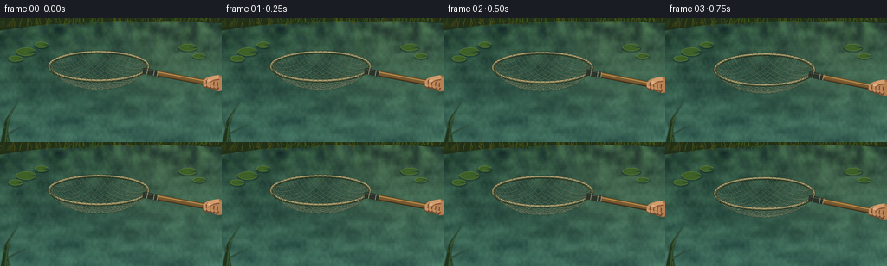
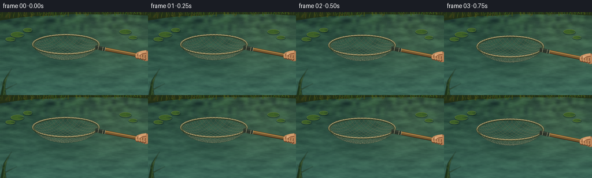
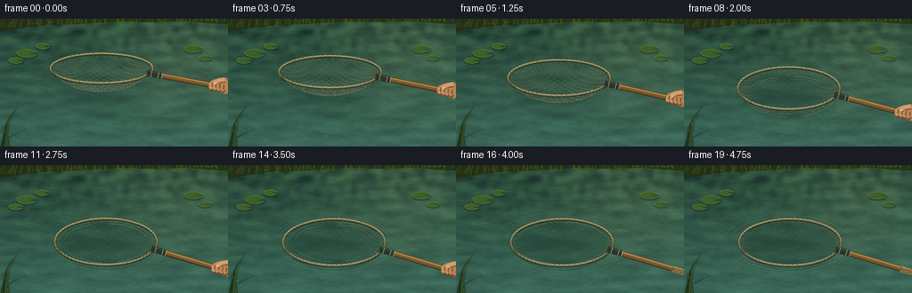

CODING AGENTS AS PIXEL WORLD MODELS
traex/GPT-6.1-Sol · mechanics_0013
点击播放 · 原生 RGB 像素
逐轮保存的候选
回放视频、检查图与代码变化。
每份候选均可单独播放。实际图片检查记录在下方工具轨迹中。
候选 01播放与检查图
点击播放 · 原生 RGB 像素


展开代码变化
--- 上一保存版本
+++ 本次保存版本
@@ -0,0 +1,236 @@
+from pathlib import Path
+import math
+import numpy as np
+from PIL import Image, ImageDraw, ImageFilter
+import artifact_io
+
+ROOT=Path(__file__).resolve().parent
+W,H,S=256,144,4
+WW,HH=W*S,H*S
+rng=np.random.default_rng(27)
+
+def smooth(a,b,x):
+ u=np.clip((x-a)/(b-a),0,1)
+ return u*u*(3-2*u)
+
+def noise_grid(w,h,blur=0):
+ a=rng.random((h,w))
+ im=Image.fromarray(np.uint8(a*255)).resize((WW,HH),Image.Resampling.BICUBIC)
+ if blur: im=im.filter(ImageFilter.GaussianBlur(blur*S))
+ return np.asarray(im)/255.
+
+Y,X=np.mgrid[0:HH,0:WW].astype(float); X/=S;Y/=S
+n1=noise_grid(18,18,3);n2=noise_grid(95,42,0.3);n3=noise_grid(256,144,0)
+fol=noise_grid(37,15,1)
+
+def line(d,pts,col,width=1):
+ d.line([(x*S,y*S) for x,y in pts],fill=col,width=max(1,round(width*S)),joint='curve')
+def ellipse(d,box,col,outline=None,width=1):
+ d.ellipse(tuple(v*S for v in box),fill=col,outline=outline,width=max(1,round(width*S)))
+def poly(d,pts,col):
+ d.polygon([(x*S,y*S) for x,y in pts],fill=col)
+
+# Quiet, slightly irregular reflected shoreline and foliage.
+bg=np.empty((HH,WW,3),float)
+grad=np.clip(Y/144,0,1)
+for c,(a,b) in enumerate([(39,57),(70,101),(54,87)]):bg[:,:,c]=a+(b-a)*grad
+variation=(n1-.5)*35+(n2-.5)*12
+bg+=variation[:,:,None]*np.array([.72,1.,.73])
+# Reflected leafy canopy occupies the far side of the water.
+canopy=np.exp(-Y/29)*(fol-.47)*66
+bg+=canopy[:,:,None]*np.array([.56,.9,.4])
+# Warm, softly reflected sky and afternoon sunlight at the upper right.
+light=np.exp(-((X-202)/75)**2-((Y-39)/75)**2)*15
+bg+=light[:,:,None]*np.array([1.1,1.,.55])
+
+# Natural pads well outside the area of the net.
+pads=[(30,39,11,4.7,.5),(48,31,7.3,3.4,-.5),(18,47,8,3.3,.2),(217,34,10,4,-.2),(230,44,7,2.8,.8)]
+
+def pond(t):
+ wave=np.sin(Y*2.6+np.sin(X*.058+t*.31)*1.5-t*.85)
+ wave2=np.sin(Y*.49+X*.028+np.sin(X*.091)-t*.25)
+ wave3=np.cos(X*.44+Y*3.2+t*.8)
+ glint=np.maximum(wave,0)**15*(.35+.65*n2)
+ a=bg+wave2[:,:,None]*2.3+wave3[:,:,None]*.6
+ a+=glint[:,:,None]*np.array([6.5,9,8])
+ a+=(n3-.5)[:,:,None]*2.0
+ im=Image.fromarray(np.uint8(np.clip(a,0,255)))
+ d=ImageDraw.Draw(im,'RGBA')
+ # distant muddy bank, clipped at the top
+ poly(d,[(-4,0),(260,0),(260,6),(235,5),(208,3),(168,4),(133,3),(90,6),(56,7),(29,10),(-4,15)],(34,48,23,255))
+ # Low shoreline grasses: slender and irregular rather than a geometric border.
+ rr=np.random.default_rng(24)
+ for i in range(200):
+ x=rr.uniform(-10,263);base=9-6*x/256+rr.uniform(-2,2)
+ ht=rr.uniform(3,15)
+ bend=rr.uniform(-5,5)
+ line(d,[(x,base),(x+bend*.45,base-ht*.6),(x+bend,base-ht)],(int(rr.uniform(46,87)),int(rr.uniform(63,101)),25,230),rr.uniform(.3,.8))
+ # Small far-side soft reflections.
+ for i in range(45):
+ x=rr.uniform(0,256);y=rr.uniform(13,38);ln=rr.uniform(2,8)
+ line(d,[(x,y),(x+ln,y-.1)],(127,144,92,rr.integers(10,28).item()),.3)
+ for cx,cy,rx,ry,rot in pads:
+ ellipse(d,(cx-rx-1,cy-ry+1,cx+rx+1,cy+ry+2),(12,35,24,90))
+ pts=[]
+ for ang in np.linspace(.28,2*math.pi-.18,90):
+ pts.append((cx+rx*math.cos(ang),cy+ry*math.sin(ang)))
+ pts.append((cx+rx*.10,cy+.4))
+ poly(d,pts,(59,95,39,255))
+ line(d,pts[:-1],(119,139,64,160),.5)
+ for ang in [1.3,2.5,3.6,4.7]:
+ line(d,[(cx,cy),(cx+rx*.86*math.cos(ang),cy+ry*.85*math.sin(ang))],(109,130,58,95),.28)
+ return im
+
+# A circular landing net, viewed obliquely: the bag is a curved knotted diamond lattice.
+CX,CY=119.,88.
+R=57.
+
+def state(t):
+ settle=smooth(.1,3.,t)
+ height=.57*(1-settle)+.018
+ tilt=.17*(1-settle)
+ drift=-5*(1-settle)
+ return height,tilt,drift
+
+def project(x,y,z,st):
+ h,tilt,dx=st
+ # A small tilt about the transverse axis disappears as it is laid flat.
+ yp=y*math.cos(tilt)-z*math.sin(tilt)
+ zp=z*math.cos(tilt)+y*math.sin(tilt)+h
+ return CX+dx+R*x, CY+R*.46*yp-R*.95*zp, zp
+
+def bag_z(x,y):
+ r2=x*x+y*y
+ return -.39*max(0,1-r2)**.68
+
+def mesh_paths():
+ paths=[]
+ # Diagonal cord families clipped to the circular hoop; the centre sags into a pouch.
+ for fam in [1,-1]:
+ for k in np.arange(-1.32,1.34,.137):
+ # x + fam*y = k
+ discr=2-k*k
+ if discr<=0:continue
+ lo=(k-math.sqrt(discr))/2;hi=(k+math.sqrt(discr))/2
+ xs=np.linspace(lo,hi,85)
+ ys=fam*(k-xs)
+ paths.append([(float(x),float(y),bag_z(x,y)) for x,y in zip(xs,ys)])
+ return paths
+MESH=mesh_paths()
+
+
+def ripples(im,t):
+ if t<1.5:return
+ overlay=Image.new('RGBA',(WW,HH));d=ImageDraw.Draw(overlay)
+ for birth in [1.5,1.92,2.36,2.88,3.35]:
+ age=t-birth
+ if age<0:continue
+ rad=43+age*13
+ alpha=int(55*math.exp(-age*.55)*(min(age/.20,1)))
+ for start,end in [(3,73),(93,161),(187,250),(275,342)]:
+ pts=[]
+ for aa in np.linspace(start,end,80):
+ q=math.radians(aa);r=rad+.8*math.sin(q*5+age)
+ pts.append((CX+r*math.cos(q),CY+r*.46*math.sin(q)))
+ line(d,pts,(160,180,145,alpha),.55)
+ line(d,[(x,y+.7) for x,y in pts],(25,63,51,alpha),.75)
+ im.alpha_composite(overlay)
+
+
+def draw_net(im,t):
+ st=state(t);height=st[0]
+ # A diffuse reflection/shadow sits on the water rather than tracking the airborne rim.
+ shadow=Image.new('RGBA',(WW,HH));dd=ImageDraw.Draw(shadow)
+ ellipse(dd,(CX-53,CY-23,CX+53,CY+25),(13,39,31,int(30+25*(1-height/.6))))
+ shadow=shadow.filter(ImageFilter.GaussianBlur(3*S));im.alpha_composite(shadow)
+ ripples(im,t)
+ layer=Image.new('RGBA',(WW,HH));d=ImageDraw.Draw(layer)
+ hoop=[project(math.cos(a),math.sin(a),0,st)[:2] for a in np.linspace(0,2*math.pi,361)]
+ # Mesh darkens and takes on the green of the water as the pouch becomes submerged.
+ for path in MESH:
+ p=[project(x,y,z,st) for x,y,z in path]
+ for j in range(len(p)-1):
+ a,b=p[j],p[j+1];z=(a[2]+b[2])/2
+ wet=float(smooth(.015,-.16,z)) if False else float(1-smooth(-.14,.015,z))
+ col=np.array([174,166,128])*(1-wet)+np.array([64,103,83])*wet
+ # Cord shadow and a lighter, narrow fibre make the mesh readable.
+ line(d,[a[:2],b[:2]],(25,42,30,int(115-wet*40)),.85)
+ line(d,[(a[0],a[1]-.18),(b[0],b[1]-.18)],tuple(map(int,col))+(int(225-wet*60),),.36)
+ # Numerous tiny lashings along the rim, like a real attached nylon bag.
+ line(d,hoop,(32,43,28,255),3.5)
+ line(d,[(x,y-.28) for x,y in hoop],(145,133,91,255),2.45)
+ line(d,[(x,y-.75) for x,y in hoop],(205,194,148,245),.62)
+ line(d,[(x,y+.72) for x,y in hoop],(69,77,48,220),.7)
+ for a in np.linspace(0,2*math.pi,62,endpoint=False):
+ x,y,_=project(math.cos(a),math.sin(a),0,st)
+ x2,y2,_=project(.966*math.cos(a),.966*math.sin(a),-.018,st)
+ line(d,[(x,y-1),(x2,y2+1)],(64,72,44,240),.63)
+ ellipse(d,(x-.36,y-.35,x+.35,y+.35),(191,185,142,220))
+ # The socket and wooden shaft point towards the offscreen fisherman.
+ start=np.array(project(.93,.32,0,st)[:2])
+ end=np.array(project(2.72,1.48,0,st)[:2])
+ v=end-start;v=v/np.linalg.norm(v);normal=np.array([-v[1],v[0]])
+ def shaft_segment(a,b,width):
+ return [tuple(a+normal*width),tuple(b+normal*width),tuple(b-normal*width),tuple(a-normal*width)]
+ poly(d,shaft_segment(start,end,3.2),(47,37,23,255))
+ poly(d,shaft_segment(start-normal*.35,end-normal*.35,2.65),(133,94,49,255))
+ line(d,[tuple(start-normal*1.7),tuple(end-normal*1.7)],(200,156,84,255),1.0)
+ line(d,[tuple(start+normal*1.65),tuple(end+normal*1.65)],(86,59,30,255),.65)
+ for off in [-.8,.55]:
+ line(d,[tuple(start+v*11+normal*off),tuple(end+normal*off)],(101,71,33,125),.25)
+ collar=start+v*15
+ poly(d,shaft_segment(start-v*2,collar,3.55),(44,52,42,255))
+ line(d,[tuple(start-normal*2.3),tuple(collar-normal*2.3)],(123,132,109,255),.6)
+ for dist in [3,11,15]:
+ c=start+v*dist
+ line(d,[tuple(c-normal*3.3),tuple(c+normal*3.3)],(170,167,130,230),.7)
+ # Distal grip: softly textured cork.
+ ga=start+v*74
+ poly(d,shaft_segment(ga,end,3.65),(137,108,65,255))
+ line(d,[tuple(ga-normal*2.3),tuple(end-normal*2.3)],(194,161,104,255),1)
+ rr=np.random.default_rng(7)
+ for _ in range(75):
+ c=ga+(end-ga)*rr.random()+normal*rr.uniform(-2.8,2.8)
+ ellipse(d,(c[0]-.3,c[1]-.25,c[0]+.4,c[1]+.2),(65,54,33,105))
+ im.alpha_composite(layer)
+ # A cropped hand lowers the handle, then calmly withdraws when the net rests.
+ hand=Image.new('RGBA',(WW,HH));dh=ImageDraw.Draw(hand)
+ withdraw=smooth(3.35,4.6,t)*47
+ grip=start+v*78+np.array([withdraw,withdraw*.22])
+ gx,gy=grip
+ # Forearm enters from the right; a dark olive jacket cuff ends at the wrist.
+ poly(dh,[(gx+23,gy-9),(280,gy-4),(282,gy+25),(gx+18,gy+12)],(48,57,40,255))
+ line(dh,[(gx+23,gy-8),(276,gy-1)],(83,90,67,255),1.4)
+ poly(dh,[(gx+15,gy-9),(gx+26,gy-7),(gx+23,gy+13),(gx+12,gy+9)],(42,47,32,255))
+ line(dh,[(gx+18,gy-8),(gx+16,gy+10)],(107,109,76,255),1)
+ # Wrist, palm and rounded fingertips over the shaft.
+ pts=[(gx+18,gy-6),(gx+9,gy-10),(gx+1,gy-9),(gx-7,gy-6),(gx-9,gy-2),(gx-6,gy+3),(gx+1,gy+6),(gx+8,gy+9),(gx+16,gy+8)]
+ poly(dh,pts,(166,114,77,255))
+ ellipse(dh,(gx-8,gy-8,gx+9,gy+4),(195,144,98,255))
+ ellipse(dh,(gx+2,gy-7,gx+18,gy+7),(183,129,86,255))
+ for j in range(4):
+ fx=gx-7+j*4.3;fy=gy-1+j*.9
+ line(dh,[(fx,fy-3),(fx-.4,fy+3),(fx+2.2,fy+5)],(112,71,45,255),4.4)
+ line(dh,[(fx-.5,fy-3),(fx-.6,fy+2.4),(fx+1.5,fy+3.5)],(202-j*5,147-j*4,99-j*3,255),3.3)
+ line(dh,[(fx-.8,fy+.3),(fx+1.4,fy+.7)],(149,95,60,200),.4)
+ # Thumb sits lengthwise on the upper edge of the handle.
+ line(dh,[(gx+9,gy-7),(gx+2,gy-6),(gx-3,gy-3)],(135,83,52,255),5.8)
+ line(dh,[(gx+9,gy-7.7),(gx+2,gy-6.5),(gx-3,gy-3.5)],(211,158,110,255),4.5)
+ ellipse(dh,(gx-4.2,gy-5,gx-.2,gy-2.2),(221,174,129,255))
+ im.alpha_composite(hand)
+
+frames=[]
+for i in range(20):
+ t=i/4
+ im=pond(t).convert('RGBA')
+ draw_net(im,t)
+ # A few unfocused foreground rushes frame the lower-left edge.
+ fg=Image.new('RGBA',(WW,HH));d=ImageDraw.Draw(fg)
+ for x,dx,ht in [(1,19,55),(9,-6,32),(-3,32,29),(4,9,43)]:
+ pts=[(x-2,153),(x+dx*.35-1,153-ht*.63),(x+dx,153-ht),(x+dx*.35+2,153-ht*.63),(x+3,153)]
+ poly(d,pts,(29,52,26,255))
+ line(d,[(x+1,153),(x+dx*.35+1,153-ht*.63),(x+dx,153-ht)],(88,113,53,160),.65)
+ fg=fg.filter(ImageFilter.GaussianBlur(.55*S));im.alpha_composite(fg)
+ im=im.convert('RGB').resize((W,H),Image.Resampling.LANCZOS)
+ frames.append(np.asarray(im,dtype=np.uint8))
+artifact_io.save(np.stack(frames),ROOT)
候选 02播放与检查图
点击播放 · 原生 RGB 像素


展开代码变化
--- 上一保存版本
+++ 本次保存版本
@@ -20,7 +20,7 @@
return np.asarray(im)/255.
Y,X=np.mgrid[0:HH,0:WW].astype(float); X/=S;Y/=S
-n1=noise_grid(18,18,3);n2=noise_grid(95,42,0.3);n3=noise_grid(256,144,0)
+n1=noise_grid(12,34,2);n2=noise_grid(45,80,0.3);n3=noise_grid(256,144,0)
fol=noise_grid(37,15,1)
def line(d,pts,col,width=1):
@@ -34,7 +34,7 @@
bg=np.empty((HH,WW,3),float)
grad=np.clip(Y/144,0,1)
for c,(a,b) in enumerate([(39,57),(70,101),(54,87)]):bg[:,:,c]=a+(b-a)*grad
-variation=(n1-.5)*35+(n2-.5)*12
+variation=(n1-.5)*25+(n2-.5)*8
bg+=variation[:,:,None]*np.array([.72,1.,.73])
# Reflected leafy canopy occupies the far side of the water.
canopy=np.exp(-Y/29)*(fol-.47)*66
@@ -65,6 +65,17 @@
ht=rr.uniform(3,15)
bend=rr.uniform(-5,5)
line(d,[(x,base),(x+bend*.45,base-ht*.6),(x+bend,base-ht)],(int(rr.uniform(46,87)),int(rr.uniform(63,101)),25,230),rr.uniform(.3,.8))
+ # Fine horizontal capillary waves and broken sky reflections.
+ surface_rng=np.random.default_rng(198)
+ for j in range(175):
+ x=surface_rng.uniform(-15,255);y=surface_rng.uniform(17,149)
+ length=surface_rng.uniform(2.5,18)*(0.7+y/200)
+ phase=surface_rng.uniform(0,6.28)
+ dy=.36*math.sin(t*.7+phase)
+ strength=int(surface_rng.uniform(13,36)*(0.8+.2*math.sin(t*.6+phase)))
+ pts=[(x,y+dy),(x+length*.4,y+dy-.25),(x+length,y+dy+.1)]
+ line(d,[(px,py+.65) for px,py in pts],(23,54,45,strength+5),.48)
+ line(d,pts,(149,176,146,strength),.36)
# Small far-side soft reflections.
for i in range(45):
x=rr.uniform(0,256);y=rr.uniform(13,38);ln=rr.uniform(2,8)
@@ -126,13 +137,13 @@
age=t-birth
if age<0:continue
rad=43+age*13
- alpha=int(55*math.exp(-age*.55)*(min(age/.20,1)))
+ alpha=int(105*math.exp(-age*.48)*(min(age/.20,1)))
for start,end in [(3,73),(93,161),(187,250),(275,342)]:
pts=[]
for aa in np.linspace(start,end,80):
q=math.radians(aa);r=rad+.8*math.sin(q*5+age)
pts.append((CX+r*math.cos(q),CY+r*.46*math.sin(q)))
- line(d,pts,(160,180,145,alpha),.55)
+ line(d,pts,(177,194,159,alpha),.65)
line(d,[(x,y+.7) for x,y in pts],(25,63,51,alpha),.75)
im.alpha_composite(overlay)
@@ -151,7 +162,7 @@
p=[project(x,y,z,st) for x,y,z in path]
for j in range(len(p)-1):
a,b=p[j],p[j+1];z=(a[2]+b[2])/2
- wet=float(smooth(.015,-.16,z)) if False else float(1-smooth(-.14,.015,z))
+ wet=float(1-smooth(-.14,.015,z))
col=np.array([174,166,128])*(1-wet)+np.array([64,103,83])*wet
# Cord shadow and a lighter, narrow fibre make the mesh readable.
line(d,[a[:2],b[:2]],(25,42,30,int(115-wet*40)),.85)
可观测工具轨迹
实际执行的命令与返回图片。
命令 1exit 0
/bin/bash -lc 'ls -la && cat prompt.txt && cat GENERATION_RULES.md && cat task_spec.json'
命令 2exit 0
/bin/bash -lc 'cat artifact_io.py'
命令 3exit 0
/bin/bash -lc "cat > generate.py <<'PY'
from pathlib import Path
import math
import numpy as np
from PIL import Image, ImageDraw, ImageFilter
import artifact_io
ROOT=Path(__file__).resolve().parent
W,H,S=256,144,4
WW,HH=W*S,H*S
rng=np.random.default_rng(27)
def smooth(a,b,x):
u=np.clip((x-a)/(b-a),0,1)
return u*u*(3-2*u)
def noise_grid(w,h,blur=0):
a=rng.random((h,w))
im=Image.fromarray(np.uint8(a*255)).resize((WW,HH),Image.Resampling.BICUBIC)
if blur: im=im.filter(ImageFilter.GaussianBlur(blur*S))
return np.asarray(im)/255.
Y,X=np.mgrid[0:HH,0:WW].astype(float); X/=S;Y/=S
n1=noise_grid(18,18,3);n2=noise_grid(95,42,0.3);n3=noise_grid(256,144,0)
fol=noise_grid(37,15,1)
def line(d,pts,col,width=1):
d.line([(x*S,y*S) for x,y in pts],fill=col,width=max(1,round(width*S)),joint='curve')
def ellipse(d,box,col,outline=None,width=1):
d.ellipse(tuple(v*S for v in box),fill=col,outline=outline,width=max(1,round(width*S)))
def poly(d,pts,col):
d.polygon([(x*S,y*S) for x,y in pts],fill=col)
# Quiet, slightly irregular reflected shoreline and foliage.
bg=np.empty((HH,WW,3),float)
grad=np.clip(Y/144,0,1)
for c,(a,b) in enumerate([(39,57),(70,101),(54,87)]):bg[:,:,c]=a+(b-a)*grad
variation=(n1-.5)*35+(n2-.5)*12
bg+=variation[:,:,None]*np.array([.72,1.,.73])
# Reflected leafy canopy occupies the far side of the water.
canopy=np.exp(-Y/29)*(fol-.47)*66
bg+=canopy[:,:,None]*np.array([.56,.9,.4])
# Warm, softly reflected sky and afternoon sunlight at the upper right.
light=np.exp(-((X-202)/75)**2-((Y-39)/75)**2)*15
bg+=light[:,:,None]*np.array([1.1,1.,.55])
# Natural pads well outside the area of the net.
pads=[(30,39,11,4.7,.5),(48,31,7.3,3.4,-.5),(18,47,8,3.3,.2),(217,34,10,4,-.2),(230,44,7,2.8,.8)]
def pond(t):
wave=np.sin(Y*2.6+np.sin(X*.058+t*.31)*1.5-t*.85)
wave2=np.sin(Y*.49+X*.028+np.sin(X*.091)-t*.25)
wave3=np.cos(X*.44+Y*3.2+t*.8)
glint=np.maximum(wave,0)**15*(.35+.65*n2)
a=bg+wave2[:,:,None]*2.3+wave3[:,:,None]*.6
a+=glint[:,:,None]*np.array([6.5,9,8])
a+=(n3-.5)[:,:,None]*2.0
im=Image.fromarray(np.uint8(np.clip(a,0,255)))
d=ImageDraw.Draw(im,'RGBA')
# distant muddy bank, clipped at the top
poly(d,[(-4,0),(260,0),(260,6),(235,5),(208,3),(168,4),(133,3),(90,6),(56,7),(29,10),(-4,15)],(34,48,23,255))
# Low shoreline grasses: slender and irregular rather than a geometric border.
rr=np.random.default_rng(24)
for i in range(200):
x=rr.uniform(-10,263);base=9-6*x/256+rr.uniform(-2,2)
ht=rr.uniform(3,15)
bend=rr.uniform(-5,5)
line(d,[(x,base),(x+bend*.45,base-ht*.6),(x+bend,base-ht)],(int(rr.uniform(46,87)),int(rr.uniform(63,101)),25,230),rr.uniform(.3,.8))
# Small far-side soft reflections.
for i in range(45):
x=rr.uniform(0,256);y=rr.uniform(13,38);ln=rr.uniform(2,8)
line(d,[(x,y),(x+ln,y-.1)],(127,144,92,rr.integers(10,28).item()),.3)
for cx,cy,rx,ry,rot in pads:
ellipse(d,(cx-rx-1,cy-ry+1,cx+rx+1,cy+ry+2),(12,35,24,90))
pts=[]
for ang in np.linspace(.28,2*math.pi-.18,90):
pts.append((cx+rx*math.cos(ang),cy+ry*math.sin(ang)))
pts.append((cx+rx*.10,cy+.4))
poly(d,pts,(59,95,39,255))
line(d,pts[:-1],(119,139,64,160),.5)
for ang in [1.3,2.5,3.6,4.7]:
line(d,[(cx,cy),(cx+rx*.86*math.cos(ang),cy+ry*.85*math.sin(ang))],(109,130,58,95),.28)
return im
# A circular landing net, viewed obliquely: the bag is a curved knotted diamond lattice.
CX,CY=119.,88.
R=57.
def state(t):
settle=smooth(.1,3.,t)
height=.57*(1-settle)+.018
tilt=.17*(1-settle)
drift=-5*(1-settle)
return height,tilt,drift
def project(x,y,z,st):
h,tilt,dx=st
# A small tilt about the transverse axis disappears as it is laid flat.
yp=y*math.cos(tilt)-z*math.sin(tilt)
zp=z*math.cos(tilt)+y*math.sin(tilt)+h
return CX+dx+R*x, CY+R*.46*yp-R*.95*zp, zp
def bag_z(x,y):
r2=x*x+y*y
return -.39*max(0,1-r2)**.68
def mesh_paths():
paths=[]
# Diagonal cord families clipped to the circular hoop; the centre sags into a pouch.
for fam in [1,-1]:
for k in np.arange(-1.32,1.34,.137):
# x + fam*y = k
discr=2-k*k
if discr<=0:continue
lo=(k-math.sqrt(discr))/2;hi=(k+math.sqrt(discr))/2
xs=np.linspace(lo,hi,85)
ys=fam*(k-xs)
paths.append([(float(x),float(y),bag_z(x,y)) for x,y in zip(xs,ys)])
return paths
MESH=mesh_paths()
def ripples(im,t):
if t<1.5:return
overlay=Image.new('RGBA',(WW,HH));d=ImageDraw.Draw(overlay)
for birth in [1.5,1.92,2.36,2.88,3.35]:
age=t-birth
if age<0:continue
rad=43+age*13
alpha=int(55*math.exp(-age*.55)*(min(age/.20,1)))
for start,end in [(3,73),(93,161),(187,250),(275,342)]:
pts=[]
for aa in np.linspace(start,end,80):
q=math.radians(aa);r=rad+.8*math.sin(q*5+age)
pts.append((CX+r*math.cos(q),CY+r*.46*math.sin(q)))
line(d,pts,(160,180,145,alpha),.55)
line(d,[(x,y+.7) for x,y in pts],(25,63,51,alpha),.75)
im.alpha_composite(overlay)
def draw_net(im,t):
st=state(t);height=st[0]
# A diffuse reflection/shadow sits on the water rather than tracking the airborne rim.
shadow=Image.new('RGBA',(WW,HH));dd=ImageDraw.Draw(shadow)
ellipse(dd,(CX-53,CY-23,CX+53,CY+25),(13,39,31,int(30+25*(1-height/.6))))
shadow=shadow.filter(ImageFilter.GaussianBlur(3*S));im.alpha_composite(shadow)
ripples(im,t)
layer=Image.new('RGBA',(WW,HH));d=ImageDraw.Draw(layer)
hoop=[project(math.cos(a),math.sin(a),0,st)[:2] for a in np.linspace(0,2*math.pi,361)]
# Mesh darkens and takes on the green of the water as the pouch becomes submerged.
for path in MESH:
p=[project(x,y,z,st) for x,y,z in path]
for j in range(len(p)-1):
a,b=p[j],p[j+1];z=(a[2]+b[2])/2
wet=float(smooth(.015,-.16,z)) if False else float(1-smooth(-.14,.015,z))
col=np.array([174,166,128])*(1-wet)+np.array([64,103,83])*wet
# Cord shadow and a lighter, narrow fibre make the mesh readable.
line(d,[a[:2],b[:2]],(25,42,30,int(115-wet*40)),.85)
line(d,[(a[0],a[1]-.18),(b[0],b[1]-.18)],tuple(map(int,col))+(int(225-wet*60),),.36)
# Numerous tiny lashings along the rim, like a real attached nylon bag.
line(d,hoop,(32,43,28,255),3.5)
line(d,[(x,y-.28) for x,y in hoop],(145,133,91,255),2.45)
line(d,[(x,y-.75) for x,y in hoop],(205,194,148,245),.62)
line(d,[(x,y+.72) for x,y in hoop],(69,77,48,220),.7)
for a in np.linspace(0,2*math.pi,62,endpoint=False):
x,y,_=project(math.cos(a),math.sin(a),0,st)
x2,y2,_=project(.966*math.cos(a),.966*math.sin(a),-.018,st)
line(d,[(x,y-1),(x2,y2+1)],(64,72,44,240),.63)
ellipse(d,(x-.36,y-.35,x+.35,y+.35),(191,185,142,220))
# The socket and wooden shaft point towards the offscreen fisherman.
start=np.array(project(.93,.32,0,st)[:2])
end=np.array(project(2.72,1.48,0,st)[:2])
v=end-start;v=v/np.linalg.norm(v);normal=np.array([-v[1],v[0]])
def shaft_segment(a,b,width):
return [tuple(a+normal*width),tuple(b+normal*width),tuple(b-normal*width),tuple(a-normal*width)]
poly(d,shaft_segment(start,end,3.2),(47,37,23,255))
poly(d,shaft_segment(start-normal*.35,end-normal*.35,2.65),(133,94,49,255))
line(d,[tuple(start-normal*1.7),tuple(end-normal*1.7)],(200,156,84,255),1.0)
line(d,[tuple(start+normal*1.65),tuple(end+normal*1.65)],(86,59,30,255),.65)
for off in [-.8,.55]:
line(d,[tuple(start+v*11+normal*off),tuple(end+normal*off)],(101,71,33,125),.25)
collar=start+v*15
poly(d,shaft_segment(start-v*2,collar,3.55),(44,52,42,255))
line(d,[tuple(start-normal*2.3),tuple(collar-normal*2.3)],(123,132,109,255),.6)
for dist in [3,11,15]:
c=start+v*dist
line(d,[tuple(c-normal*3.3),tuple(c+normal*3.3)],(170,167,130,230),.7)
# Distal grip: softly textured cork.
ga=start+v*74
poly(d,shaft_segment(ga,end,3.65),(137,108,65,255))
line(d,[tuple(ga-normal*2.3),tuple(end-normal*2.3)],(194,161,104,255),1)
rr=np.random.default_rng(7)
for _ in range(75):
c=ga+(end-ga)*rr.random()+normal*rr.uniform(-2.8,2.8)
ellipse(d,(c[0]-.3,c[1]-.25,c[0]+.4,c[1]+.2),(65,54,33,105))
im.alpha_composite(layer)
# A cropped hand lowers the handle, then calmly withdraws when the net rests.
hand=Image.new('RGBA',(WW,HH));dh=ImageDraw.Draw(hand)
withdraw=smooth(3.35,4.6,t)*47
grip=start+v*78+np.array([withdraw,withdraw*.22])
gx,gy=grip
# Forearm enters from the right; a dark olive jacket cuff ends at the wrist.
poly(dh,[(gx+23,gy-9),(280,gy-4),(282,gy+25),(gx+18,gy+12)],(48,57,40,255))
line(dh,[(gx+23,gy-8),(276,gy-1)],(83,90,67,255),1.4)
poly(dh,[(gx+15,gy-9),(gx+26,gy-7),(gx+23,gy+13),(gx+12,gy+9)],(42,47,32,255))
line(dh,[(gx+18,gy-8),(gx+16,gy+10)],(107,109,76,255),1)
# Wrist, palm and rounded fingertips over the shaft.
pts=[(gx+18,gy-6),(gx+9,gy-10),(gx+1,gy-9),(gx-7,gy-6),(gx-9,gy-2),(gx-6,gy+3),(gx+1,gy+6),(gx+8,gy+9),(gx+16,gy+8)]
poly(dh,pts,(166,114,77,255))
ellipse(dh,(gx-8,gy-8,gx+9,gy+4),(195,144,98,255))
ellipse(dh,(gx+2,gy-7,gx+18,gy+7),(183,129,86,255))
for j in range(4):
fx=gx-7+j*4.3;fy=gy-1+j*.9
line(dh,[(fx,fy-3),(fx-.4,fy+3),(fx+2.2,fy+5)],(112,71,45,255),4.4)
line(dh,[(fx-.5,fy-3),(fx-.6,fy+2.4),(fx+1.5,fy+3.5)],(202-j*5,147-j*4,99-j*3,255),3.3)
line(dh,[(fx-.8,fy+.3),(fx+1.4,fy+.7)],(149,95,60,200),.4)
# Thumb sits lengthwise on the upper edge of the handle.
line(dh,[(gx+9,gy-7),(gx+2,gy-6),(gx-3,gy-3)],(135,83,52,255),5.8)
line(dh,[(gx+9,gy-7.7),(gx+2,gy-6.5),(gx-3,gy-3.5)],(211,158,110,255),4.5)
ellipse(dh,(gx-4.2,gy-5,gx-.2,gy-2.2),(221,174,129,255))
im.alpha_composite(hand)
frames=[]
for i in range(20):
t=i/4
im=pond(t).convert('RGBA')
draw_net(im,t)
# A few unfocused foreground rushes frame the lower-left edge.
fg=Image.new('RGBA',(WW,HH));d=ImageDraw.Draw(fg)
for x,dx,ht in [(1,19,55),(9,-6,32),(-3,32,29),(4,9,43)]:
pts=[(x-2,153),(x+dx*.35-1,153-ht*.63),(x+dx,153-ht),(x+dx*.35+2,153-ht*.63),(x+3,153)]
poly(d,pts,(29,52,26,255))
line(d,[(x+1,153),(x+dx*.35+1,153-ht*.63),(x+dx,153-ht)],(88,113,53,160),.65)
fg=fg.filter(ImageFilter.GaussianBlur(.55*S));im.alpha_composite(fg)
im=im.convert('RGB').resize((W,H),Image.Resampling.LANCZOS)
frames.append(np.asarray(im,dtype=np.uint8))
artifact_io.save(np.stack(frames),ROOT)
PY
python generate.py"命令 4exit 0
/bin/bash -lc "python - <<'PY'
p='generate.py'
s=open(p).read().replace('n1=noise_grid(18,18,3);n2=noise_grid(95,42,0.3);n3=noise_grid(256,144,0)','n1=noise_grid(12,34,2);n2=noise_grid(45,80,0.3);n3=noise_grid(256,144,0)')
s=s.replace('variation=(n1-.5)*35+(n2-.5)*12','variation=(n1-.5)*25+(n2-.5)*8')
s=s.replace(\" # Small far-side soft reflections.\\n\", \"\"\" # Fine horizontal capillary waves and broken sky reflections.
surface_rng=np.random.default_rng(198)
for j in range(175):
x=surface_rng.uniform(-15,255);y=surface_rng.uniform(17,149)
length=surface_rng.uniform(2.5,18)*(0.7+y/200)
phase=surface_rng.uniform(0,6.28)
dy=.36*math.sin(t*.7+phase)
strength=int(surface_rng.uniform(13,36)*(0.8+.2*math.sin(t*.6+phase)))
pts=[(x,y+dy),(x+length*.4,y+dy-.25),(x+length,y+dy+.1)]
line(d,[(px,py+.65) for px,py in pts],(23,54,45,strength+5),.48)
line(d,pts,(149,176,146,strength),.36)
# Small far-side soft reflections.
\"\"\")
s=s.replace('alpha=int(55*math.exp(-age*.55)*(min(age/.20,1)))','alpha=int(105*math.exp(-age*.48)*(min(age/.20,1)))')
s=s.replace('(160,180,145,alpha),.55','(177,194,159,alpha),.65')
s=s.replace(\"wet=float(smooth(.015,-.16,z)) if False else float(1-smooth(-.14,.015,z))\",\"wet=float(1-smooth(-.14,.015,z))\")
open(p,'w').write(s)
PY
python generate.py"命令 5exit 0
/bin/bash -lc "python - <<'PY'
import numpy as np
from pathlib import Path
p=np.load('pixels.npz')['pixels']
print('Packed RGB video:', p.shape, p.dtype)
print('PNG frames:', len(list(Path('frames').glob('*.png'))))
print('Player exists:', Path('index.html').is_file())
PY"视觉工具实际返回图片 1

视觉工具实际返回图片 2

保存候选 2 份；完成命令 5 次；可验证图片返回 2 张。原始 API 响应与完整日志保留在本地。